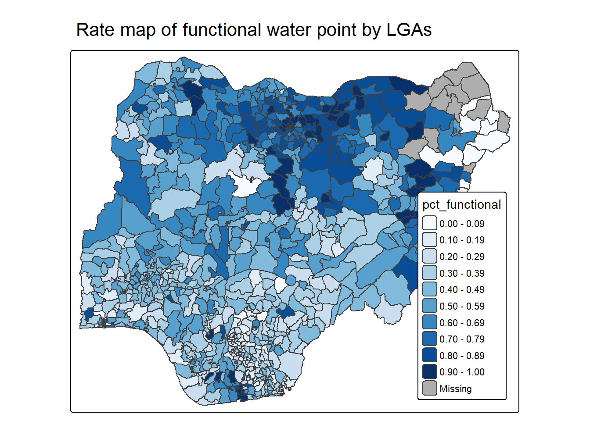
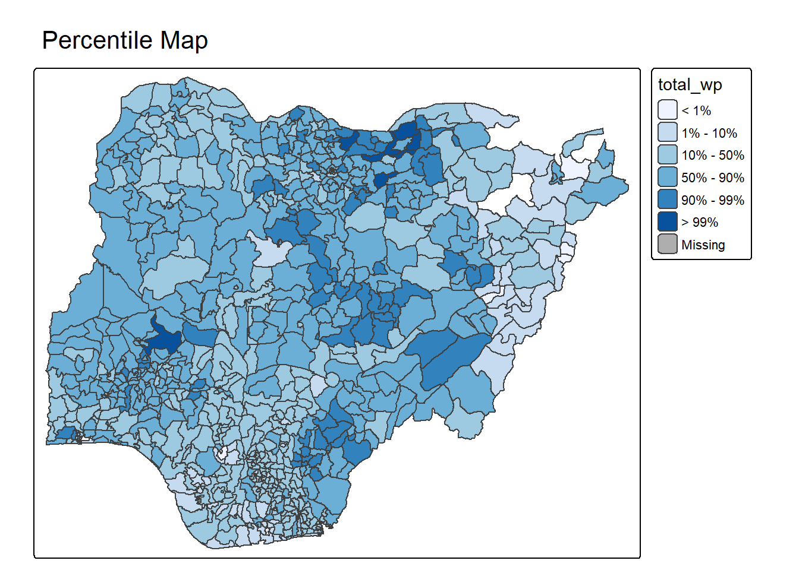
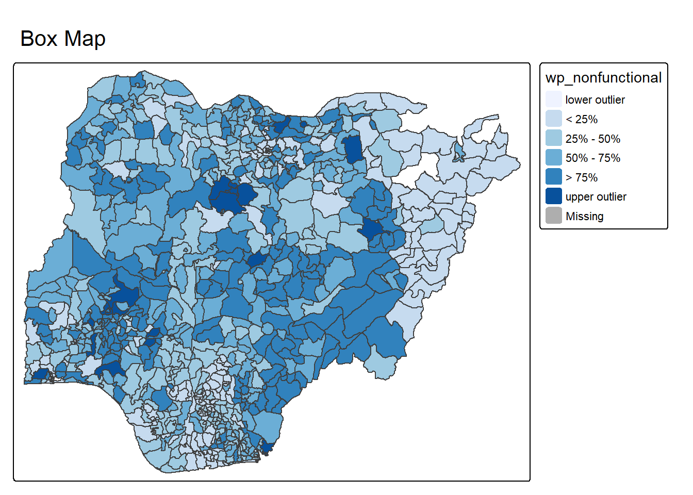

pacman::p_load(tmap, tidyverse, sf)Hands-on Exercise 9c
Analytical Mapping
23 Analytical Mapping
23.1 Overview
23.1.1 Objectives
This exercise gives hands-on experience using appropriate R methods to plot analytical maps.
23.1.2 Learning Outcome
By the end of this exercise you will be able to use appropriate functions of tmap and tidyverse to:
- import geospatial data in rds format into the R environment,
- create cartographic quality choropleth maps with appropriate tmap functions,
- create a rate map,
- create a percentile map,
- create a box map.
23.2 Getting Started
23.2.1 Installing and Loading Packages
The sf, tmap and tidyverse packages are installed and loaded into the R environment.
23.2.2 Importing Data
A prepared dataset called NGA_wp.rds is used. It is a polygon feature data frame holding information on the water points of Nigeria at the Local Government Area (LGA) level. read_rds() imports the file into R.
NGA_wp <- read_rds("data/rds/NGA_wp.rds")23.3 Basic Choropleth Mapping
23.3.1 Visualising Distribution of Non-Functional Water Point
Two choropleth maps are built and arranged side by side. The first maps functional water points and the second maps total water points, both by LGA.

p1 <- tm_shape(NGA_wp) +
tm_polygons(fill = "wp_functional",
fill.scale = tm_scale_intervals(
style = "equal",
n = 10,
values = "brewer.blues"),
fill.legend = tm_legend(
position = c("right", "bottom"))) +
tm_borders(lwd = 0.1,
fill_alpha = 1) +
tm_title("Distribution of functional water point by LGAs")
p2 <- tm_shape(NGA_wp) +
tm_polygons(fill = "total_wp",
fill.scale = tm_scale_intervals(
style = "equal",
n = 10,
values = "brewer.blues"),
fill.legend = tm_legend(
position = c("right", "bottom"))) +
tm_borders(lwd = 0.1,
fill_alpha = 1) +
tm_title("Distribution of total water point by LGAs")
tmap_arrange(p2, p1, nrow = 1)23.4 Choropleth Map for Rates
Mapping rates rather than counts matters because water points are not equally distributed in space. Without accounting for how many water points are present in each area, the map shows total water point size rather than the topic of interest.
23.4.1 Deriving Proportion of Functional and Non-Functional Water Points
The proportion of functional and non-functional water points in each LGA is tabulated. mutate() of dplyr derives two fields, pct_functional and pct_nonfunctional.
NGA_wp <- NGA_wp %>%
mutate(pct_functional = wp_functional/total_wp) %>%
mutate(pct_nonfunctional = wp_nonfunctional/total_wp)23.4.2 Plotting Map of Rate
A choropleth map shows the distribution of the percentage of functional water points by LGA.

tm_shape(NGA_wp) +
tm_polygons("pct_functional",
fill.scale = tm_scale_intervals(
style = "equal",
n = 10,
values = "brewer.blues"),
fill.legend = tm_legend(
position = c("right", "bottom"))) +
tm_borders(lwd = 0.1,
fill_alpha = 1) +
tm_title("Rate map of functional water point by LGAs")23.5 Extreme Value Maps
Extreme value maps are variations of common choropleth maps where the classification highlights extreme values at the lower and upper ends of the scale to identify outliers. They add spatial features to approaches used in non-spatial exploratory data analysis.
23.5.1 Percentile Map
The percentile map is a special quantile map with six categories, 0 to 1 percent, 1 to 10 percent, 10 to 50 percent, 50 to 90 percent, 90 to 99 percent and 99 to 100 percent. The breakpoints are derived with the base R quantile command, passing an explicit vector of cumulative probabilities, c(0, .01, .1, .5, .9, .99, 1). The begin and endpoint must be included.
23.5.1.1 Data Preparation
Step 1 excludes records with NA values.
NGA_wp <- NGA_wp %>%
drop_na()Step 2 creates the customised classification and extracts values.
percent <- c(0,.01,.1,.5,.9,.99,1)
var <- NGA_wp["pct_functional"] %>%
st_set_geometry(NULL)
quantile(var[,1], percent) 0% 1% 10% 50% 90% 99% 100%
0.0000000 0.0000000 0.2169811 0.4791667 0.8611111 1.0000000 1.0000000
NoteThings to Learn from the Code Chunk Above
Extracting a variable from an sf data frame extracts the geometry as well. Many base R functions cannot handle the geometry, and quantile() gives an error. st_set_geometry(NULL) drops the geometry field.
23.5.1.2 Why Write Functions
Writing a function has three advantages over copy and paste. A function takes an evocative name that makes the code easier to understand. When requirements change, the code is updated in one place rather than many. The chance of incidental mistakes from copying and pasting is removed.
23.5.1.3 Creating the get.var Function
An R function extracts a variable as a vector out of an sf data frame. The vname argument is the variable name as a quoted character, and df is the sf data frame. The function returns a vector of values without a column name.
get.var <- function(vname,df) {
v <- df[vname] %>%
st_set_geometry(NULL)
v <- unname(v[,1])
return(v)
}23.5.1.4 A Percentile Mapping Function
A percentile mapping function is written with the code chunk below.
percentmap <- function(vnam, df, legtitle=NA, mtitle="Percentile Map"){
percent <- c(0,.01,.1,.5,.9,.99,1)
var <- get.var(vnam, df)
bperc <- quantile(var, percent)
tm_shape(df) +
tm_polygons() +
tm_shape(df) +
tm_polygons(vnam,
title=legtitle,
breaks=bperc,
palette="Blues",
labels=c("< 1%", "1% - 10%", "10% - 50%", "50% - 90%", "90% - 99%", "> 99%")) +
tm_borders() +
tm_layout(main.title = mtitle)
}23.5.1.5 Test Drive the Percentile Mapping Function
The function is run with the code chunk below.

percentmap("total_wp", NGA_wp)
NoteThings to Learn from the Code Chunk Above
This is a bare bones implementation. Additional arguments such as the title and legend positioning could be passed to customise the map.
23.5.2 Box Map
A box map is an augmented quartile map with an additional lower and upper category. When lower outliers are present, the starting break is the minimum value and the second break is the lower fence. When no lower outliers are present, the starting break is the lower fence and the second break is the minimum value, with no observations falling between them.

ggplot(data = NGA_wp,
aes(x = "",
y = wp_nonfunctional)) +
geom_boxplot()A box map displays summary statistics on a choropleth map using the principles of the boxplot. A custom breaks specification is used, and the break points vary depending on whether lower or upper outliers are present.
23.5.2.1 Creating the boxbreaks Function
The R function below creates break points for a box map. The v argument is the vector of observations and mult is the multiplier for the interquartile range (IQR), defaulting to 1.5. The function returns a vector of seven break points.
boxbreaks <- function(v,mult=1.5) {
qv <- unname(quantile(v))
iqr <- qv[4] - qv[2]
upfence <- qv[4] + mult * iqr
lofence <- qv[2] - mult * iqr
# initialize break points vector
bb <- vector(mode="numeric",length=7)
# logic for lower and upper fences
if (lofence < qv[1]) { # no lower outliers
bb[1] <- lofence
bb[2] <- floor(qv[1])
} else {
bb[2] <- lofence
bb[1] <- qv[1]
}
if (upfence > qv[5]) { # no upper outliers
bb[7] <- upfence
bb[6] <- ceiling(qv[5])
} else {
bb[6] <- upfence
bb[7] <- qv[5]
}
bb[3:5] <- qv[2:4]
return(bb)
}23.5.2.2 Creating the get.var Function
The R function below extracts a variable as a vector out of an sf data frame. The vname argument is the variable name as a quoted character and df is the sf data frame.
get.var <- function(vname,df) {
v <- df[vname] %>% st_set_geometry(NULL)
v <- unname(v[,1])
return(v)
}23.5.2.3 Test Drive the Newly Created Function
The new function is tested with the code chunk below.
var <- get.var("wp_nonfunctional", NGA_wp)
boxbreaks(var)[1] -56.5 0.0 14.0 34.0 61.0 131.5 278.023.5.2.4 Boxmap Function
The R function below creates a box map. The vnam argument is the variable name as a quoted character, df is the simple features polygon layer, legtitle is the legend title, mtitle is the map title and mult is the multiplier for the IQR. The function returns a tmap element.
boxmap <- function(vnam, df,
legtitle=NA,
mtitle="Box Map",
mult=1.5){
var <- get.var(vnam,df)
bb <- boxbreaks(var)
tm_shape(df) +
tm_polygons() +
tm_shape(df) +
tm_fill(vnam,title=legtitle,
breaks=bb,
palette="Blues",
labels = c("lower outlier",
"< 25%",
"25% - 50%",
"50% - 75%",
"> 75%",
"upper outlier")) +
tm_borders() +
tm_layout(main.title = mtitle)
}
tmap_mode("plot")
boxmap("wp_nonfunctional", NGA_wp)
TipReading the Plot
The box map separates the lower and upper outlier LGAs from the four quartile classes. The outlier categories draw the eye to areas whose non-functional water-point counts fall outside the bulk of the distribution.
23.6 Reference
Kam, T. S. (2025). R for Visual Analytics, Chapter 23, Analytical Mapping. Singapore Management University.
🕹️ LEVEL COMPLETE 🕹️
★ ★ ★ ★ ★
CHAPTER 23 CLEARED!
+1000 XP · ACHIEVEMENT UNLOCKED: Outlier Hunter 🎯
Press any key to continue…